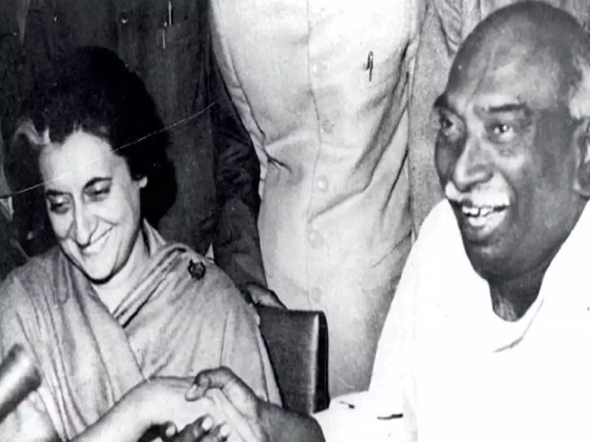

Politics
As a young boy, Kamaraj worked in his uncle's provision shop and during that time he began to attend public meetings and processions about the Indian Home Rule movement. Kamaraj developed an interest in prevailing political conditions by reading newspapers daily. The "Jallianwala Bagh massacre" was the decisive turning point in his life - he decided to fight for national freedom and to bring an end to foreign rule. In 1920, when he was 17, he became active in politics. He joined Congress as a full-time political worker. In 1921 Kamaraj organised public meetings at Virudhunagar for Congress leaders. He was eager to meet "Mahatma Gandhi", and when Gandhi visited Madurai on 21 September 1921, Kamaraj attended the public meeting and met Gandhi for the first time. He visited villages carrying Congress propaganda.
In 1922 Congress boycotted the visit of the Prince of Wales as part of the Non-Cooperation Movement. He came to Madras and took part in the event. In 1923–25 Kamaraj participated in the Nagpur Flag Satyagraha. In 1927, Kamaraj started the Sword Satyagraha in Madras and was chosen to lead the Neil Statue Satyagraha, but this was given up later in view of the Simon Commission boycott. Kamaraj went to jail for two years in June 1930 for participating in the "Salt Satyagraha". led by Rajagopalachari at Vedaranyam; he was released before he served the two-year sentence as a result of 1931 Gandhi–Irwin Pact. In 1932, Section 144 was imposed in Madras prohibiting the holding of meetings and organisation of processions against the arrest of Gandhi in Bombay. In Virdhunagar, under Kamaraj's leadership, processions and demonstrations happened every day. Kamaraj was arrested again in January 1932 and sentenced to one year's imprisonment. In 1933 Kamaraj was falsely charged in the Virudhunagar bomb case. Varadarajulu Naidu and George Joseph argued on Kamaraj's behalf and proved the charges to be baseless. At the age of 34, Kamaraj entered the Assembly winning the Sattur seat in the 1937 election.
Kamaraj conducted a vigorous campaign throughout the state asked people not to contribute to war funds when Arthur Hope, the Madras Governor, was collecting contributions to fund for the Second World War. In December 1940 he was arrested again at Guntur, under the Defence of India rules for speeches that opposed contributions to the war fund, and sent to Vellore Central Prison while he was on his way to Wardha to get Gandhi's approval for a list of Satyagrahis.
While in jail, he was elected as Municipal Councillor of Virudhunagar. He was released nine months later in November 1941 and resigned from this post as he thought he had greater responsibility for the nation. His principle was "One should not accept any post to which one could not do full justice".
In 1942, Kamaraj attended the All-India Congress Committee in Bombay and returned to spread propaganda material for the Quit India Movement . The police issued orders to all the leaders who attended this Bombay session. Kamaraj did not want to be arrested before he took the message to all district and local leaders. finishing his work and sent a message to the local police that he was ready to be arrested. He was arrested in August 1942. He was under detention for three years and was released in June 1945. This was his last prison term. Kamaraj was imprisoned six times by the British for his pro-Independence activities, that added up to more than 3,000 days in jail.
During the anti-cow slaughter agitation in 1966, Kamaraj's house near the parliament was burnt down by Hindutva groups. The agitation was incited by Bharatiya Jana Sangh, the political arm of the Rashtriya Swayamsevak Sangh (RSS). They also surrounded his house with an intent to attack him. Kamaraj had a narrow escape.